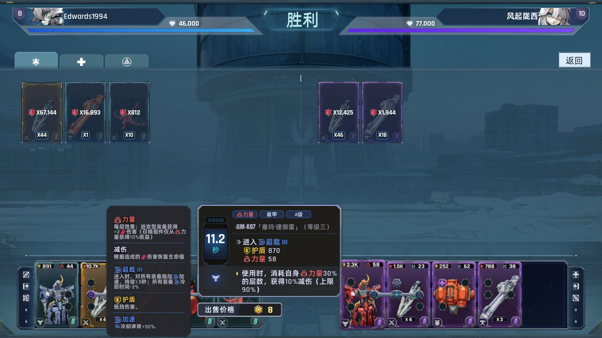

返回复盘减伤词条解释为伤害恢复生命
BUG-011 · 减伤词条解释疑似错配，显示内容已确认，实际减伤机制待验证。2026-11-16，第五局第6天，Steam Build26694005，菜单版本待核。
预期依据：装备AGM-K07塞玛·建御雷写“消耗30%力量，获得10%减伤（上限90%）”；嵌套词条应说明减伤的效果和计算口径。
实际：嵌套标题为“减伤”，正文却为“根据造成的伤害恢复生命值”。这一表述与标题及装备用途不相符，但没有完成隔离命中测试，不能据此宣称护甲实际执行吸血或扣力错误。
- 在第6天战后统计，右键敌方A建御雷护甲。
- 等待嵌套属性解释展开。
- 对照主说明10%减伤及左侧减伤解释。
本报告采用1次清晰截图；早期疑似同文不计独立复现率。下一次需要对照有/无减伤时同源单次伤害及生命回复。

减伤被解释为按造成伤害恢复生命